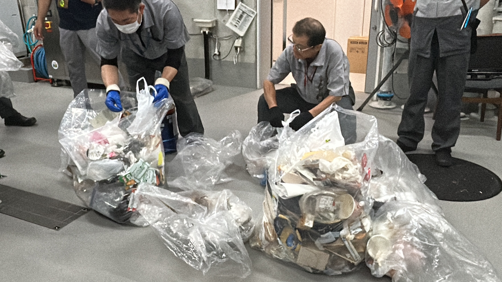

サーキュラーデザイン
キックオフ
湘南貿易さんについて
湘南貿易さんは4つの事業部に分かれ、それぞれのミッションを持ち、取り組みを行っている企業です。
今回のプロジェクトではエコロジー事業部の方達とともに進めます。
ごみ収集について


キックオフでは湘南貿易さんについての説明とともに、みなとみらいキャンパスのごみの収集について見学をした。
大学では地下1Fに収集場があり、多くのゴミが集まっていた。
どういったゴミが多いかを聞くと、”お弁当のごみ””スタバなどのドリンクカップ”が特に多いとわかった。
大学内は分別できるようにとごみ箱は燃えるゴミ、ペットボトル・缶、ミックスペーパー、プラスチックに分かれているが、それでも完璧な分別はできていないとわかった。